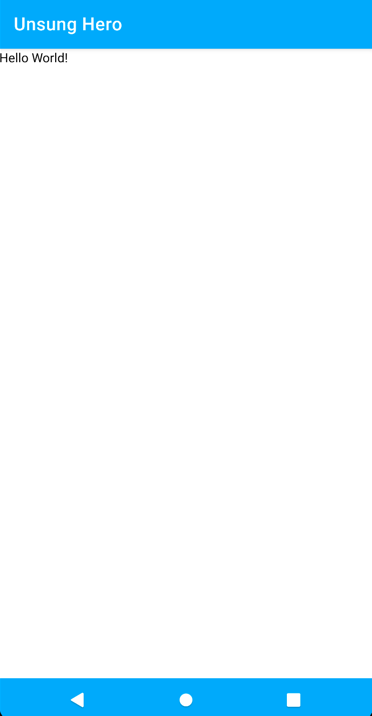

Download the Canary Build of Android Studio from the following link:
https://developer.android.com/studio/preview
Install Android Studio Canary. Note that this will be a separate app if you already have the regular Android Studio installed.
Open the Unsung Hero android project in Android Studio Canary.
Make sure that we are working on the develop branch.
Open build.gradle for the module
Change the minSdkVersion from 16 to 21
defaultConfig {
applicationId "com.example.unsunghero"
minSdkVersion 21
targetSdkVersion 29
versionCode 1
versionName "1.0"
testInstrumentationRunner "androidx.test.runner.AndroidJUnitRunner"
}
Sync the project when told so by Android Studio.
Note: If you want to skip this, checkout the branch jetpack-compose-setting-up.
In your build.gradle of the project, add a varible for Jetpack Compose version to use.
ext {
...
compose_version = '0.1.0-dev13'
...
}
Add the following dependencies in your build.gradle (module) file.
implementation "androidx.ui:ui-layout:$compose_version"
implementation "androidx.ui:ui-material:$compose_version"
implementation "androidx.ui:ui-tooling:$compose_version"
implementation "androidx.ui:ui-livedata:$compose_version"
Inside android block of you build.gradle (module) file, add the following block:
buildFeatures {
compose true
}
Sync the project when told so by Android Studio.
I am receiving an error when building the project, specifically in the code generation phase. It seems that Fragments and Android Compose does not currently play well together. Since we are not needing the fragments anymore and will do all the UI via Compose, we can delete the following files:
NominationFragment.ktPlaceholderFragment.ktSectionsPageAdapter.ktFragmentModuleAfter the deletion, modify ApplicationComponent.kt and remove the line
FragmentModule::class,
In NominationActivity.kt, comment out the lines
binding = DataBindingUtil.setContentView(this, R.layout.activity_nomination)
binding.viewPager.adapter = SectionsPagerAdapter(this, supportFragmentManager)
binding.tabs.setupWithViewPager(binding.viewPager)
You should now be able to build the project successfully (you may receive some warnings but we can ignore them).
If you followed along with the previous step and your project can be built without errors, please proceed. Otherwise, please checkout the branch jetpack-compose-setting-up and build the project.
In this step, we will create a simple Composable.
Add a new class named UnsungHeroApp inside the view package.
package com.zuhlke.unsunghero.view
import androidx.compose.Composable
import androidx.ui.foundation.Text
@Composable
fun UnsungHeroApp() {
Text("Hello World!")
}
In NominationActivity.kt, replace the code with the following:
package com.zuhlke.unsunghero.view.nomination
import android.os.Bundle
import androidx.ui.core.setContent
import com.zuhlke.unsunghero.databinding.ActivityNominationBinding
import com.zuhlke.unsunghero.view.UnsungHeroApp
import com.zuhlke.unsunghero.view.commons.BaseActivity
class NominationActivity : BaseActivity() {
private lateinit var binding: ActivityNominationBinding
override fun onCreate(savedInstanceState: Bundle?) {
super.onCreate(savedInstanceState)
setContent {
UnsungHeroApp()
}
}
}
Build the project and run the app. You should now see the app showing the first composable.

Checkout the official documentation here: Codelab Formatting Guide